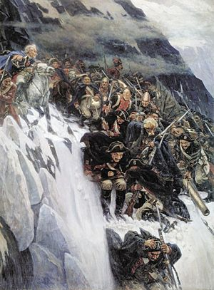

Alpe so gorski sistem v osrednji Evropi, ki se razteza v 1200 km dolgem loku med Genovskim zalivom in reko Donavo pri Dunaju.
So najvišje in najbolj gosto poseljeno gorovje Evrope, pokrivajo ozemlja Francije, Italije, Avstrije, Švice, Nemčije, Lihtenštajna in Slovenije.
Alpe zavzemajo površino približno 300 000 km², na njihovem območju pa prebiva okoli 20 milijonov ljudi. Število prebivalcev
se spreminja glede na letni čas, saj je za Alpe značilna sezonska in turistična poselitev v višjih predelih. Tu se
nahajajo večje bolj ravne površine, ki poleti služijo kot pašniki in nemalokrat pozimi kot smučišča. Gorovje leži na poti med
osrednjo ter južno Evropo, zaradi česar ima zgodovinski pomen zlasti kot tranzitna pot. Alpe so gospodarsko pomembne kot stičišče turizma,
kmetijstva, gozdarstva, pridobivanja električne energije na hidroelektrarnah ter izkopavanja soli in železove rude.
Manjše gorske skupine v Alpah zlahka definiramo med posameznimi prelazi, definicija večjih skupin pa je zelo raznolika. Italijanska razdelitev iz leta 1924 oz. 1926 deli Alpe na Zahodne, Osrednje in Vzhodne, na 26 sekcij in 112 skupin.[2] Julijske Alpe po tej definiciji vključujejo tudi Gorski Kotar, Julijske Predalpe pa celotno Istro.[3] Švicarska krovna planinska organizacija SAC (Schweizer Alpenclubs) uporablja delitev bolj ali manj po mejah kantonov [4], nemške zveze pa imajo svojo razdelitev za Vzhodne Alpe.[5] Novejši poskus poenotenja razdelitve celotnih Alp sega v leto 2006, ko jo je definiral Sergio Marazzi v okviru SOIUSA (Suddivisione orografica internazionale unificata del Sistema Alpino, Mednarodna standardizirana orografska razdelitev Alp).[6] Po SOIUSA razdelimo Alpe na dva dela (Vzhodne Alpe in Zahodne Alpe), razmejitev poteka preko Bodenskega in Komskega jezera), 5 velikih sektorjev (Jugozahodne, Severozahodne, Centralne vzhodne, Severne vzhodne in Južne vzhodne Alpe), 36 sekcij, 31 relativnih sektorjev, 132 podsekcij in 30 relativnih sektorjev. Na spodnjem seznamu so zraven še najvišji vrhovi posameznih skupin, oštevilčenje je enako kot na sliki.
| ime | višina | skupina |
|---|---|---|
| Mont Blanc | 4810 m | Savojske Alpe |
| Monte Rose | 4634 m | Peninske Alpe |
| Dom | 4545 m | Peninske Alpe |
| Weisshorn | 4505 m | Peninske Alpe |
| Matterhorn | 4478 m | Peninske Alpe |
| Grand Combin | 4314 m | Peninske Alpe |
| Finsteraarhorn | 4273 m | Bernske Alpe |
| Aletschhorn | 4192 m | Bernske Alpe |
| Barre des Écrins | 4102 m | Dolfinejske Alpe |
| Gran Paradiso | 4061 m | Savojske Alpe |
| Piz Bernina | 4049 m | Zahodne Retijske Alpe |
| Weissmies | 4023 m | Peninske Alpe |
| Country | 2000+ | 2500+ | 3000+ | 3500+ | 4000+ | Total |
|---|---|---|---|---|---|---|
| Avstrija (AT) | 206 | 150 | 93 | 14 | 0 | 463 |
| Francija (FR) | 71 | 95 | 75 | 40 | 4 | 285 |
| Nemčija (DE) | 14 | 11 | 0 | 0 | 0 | 25 |
| Italija (IT) | 149 | 197 | 169 | 48 | 7 | 570 |
| Liechtenstein (LI) | 4 | 1 | 0 | 0 | 0 | 5 |
| Slovenija (SI) | 22 | 9 | 0 | 0 | 0 | 3 |
| Švica (CH) | 66 | 114 | 147 | 44 | 24 | 395 |
| Alpe skupaj | 507 | 530 | 416 | 117 | 29 | 1599 |
Alpe so nastale postopoma, procesi iz različnih geoloških obdobij so opazni kot gorske skupine zgrajene iz različnih kamnin. V mezozoiku se je edina tektonska plošča, na kateri je stala supercelina Pangea, razklala na Lavrazijo na severu in Gondvano na jugu, vmes pa je bilo morje Tetis[7]. Proti koncu mezozoika, v pozni kredi, sta obe celini stisnili morje med njima, pri čemer se je morsko dno dvignilo v gorsko verigo od Gibraltarja, preko Alp in Himalaje do Indonezije. Nastanek Alp je torej manjši del tega procesa, ki traja še danes, ko Alpe rastejo na stiku afriške in evrazijske plošče.[8] Alpe so večinoma zgrajene iz morskih sedimentnih kamnin, nekaj je tudi magmatskih intruzij, na primer granitna na Adamellu (3539 m, Južne Retijske Alpe, Italija). Že Kelti so v Alpah kopali bakreno rudo, Rimljani so začeli izkoriščati tudi nahajališča zlata in železa. [9] Bogata so tudi nahajališča kristalov[10], na primer cinabarita, ametista in kamene strele.
Poledenitve v obdobju miocena so povzročile značilne erozijske oblike[8], ki jih je sredi 19. stoletja opazil in pojasnil Louis Agassiz, oče koncepta ledene dobe.[11] Ledeniške doline so oblikovane v obliki črke U, s strmimi stenami in širokim dnom, erodiran material se kopiči v morenah na robu, v sredini ali na koncu ledenika.[12][11] V zadnjem stoletju je opazno izginjanje, umikanje in tanjšanje ledenikov, leta 1876 so alpski ledeniki pokrivali 1817 km², leta 1973 le še 1342 km². Tudi Triglavski ledenik[13] in Ledenik pod Skuto[14] sta se močno zmanjšala in se ne premikata več. Največji ledenik v Alpah je Aletsch (Bernske Alpe, Švica), ki je dolg 23,6 km in pokriva 117,6 km².
Čeprav Alpe pokrivajo le ~11% Evrope, prispevajo 90% vode nižjeležečim predelom. Vodo se izkorišča v hidroelektrarnah, za namakanje in za pitje.[15] Kar 80% pitne vode v Milanu pride iz Alp[16][17][18], več kot 500 hidroelektrarn alpskega loka pa proizvede do 2900 KW elektrike vsako uro.[19] Velike evropske reke, kot so Ren, Rona, Pad, Inn (ki se izliva v Donavo, ki ne izvira v Alpah), pripadajo severnomorskemu in sredozemskemu povodju, običajno posebej ločimo še jadransko in črnomorsko) povodje. Gorske reke imajo velika nihanja vodostaja, zlasti spomladi zaradi taljenja snega, prinašajo velike količine proda. Na robu Alp je Ženevsko jezero, ki je s 580 km² daleč največje alpsko jezero. Za primerjavo, Gardsko jezero (370 km²), Bohinjsko jezero (3,18 km²), Krnsko jezero (5,6 ha ali 0,056 km²).
V alpskem svetu je bilo opisanih 13000 vrst[19] rastlin, ki rastejo na travnikih, v močvirjih, gozdovih (listnatih in iglastih) ter na kamniti podlagi (melišča, morene, gola skala).[20] Gozdna meja je različno visoka glede na usmerjenost pobočja (sever, jug) in lego posameznega območja v Alpah. Listnati gozd, ki ga sestavljajo bukev, hrast, jesen in beli javor, raste strnjeno do višine 1200 m na severni strani Alp, na južni pa do 1500 m, ponekod do 1700 m.[21] Nad listnatim gozdom je pas rušja (Pinnus mugo), nad njim pa pas nizkega grmičevja, zlasti dlakavega sleča (rododendron).[22] Alpske rože številnih vrst nad gozdno mejo so zaščitene in jih najdemo tudi do višine 4000 m. Verjetno najbolj prepoznavno alpski rožo - planiko (Leontopodium alpinum), najdemo na višinah med 1400 in 3400 m.[20] Zaradi ekstremnih in stresnih razmer gorske rastline proizvajajo številne sekundarne metabolite, ki so zanimivi za farmacijo in medicino,[23] deli rastlin se uporabljajo jih tudi v zdravilstvu in za pripravo čajev.
Opisanih je bilo 30000 alpskih živali, od žuželk do medveda, nekatere vrste lahko preživijo zgolj v specifični mikroklimi nad ali pod snežno mejo.[19][24] Največja žival visokih gora je alpski kozorog (Capra ibex), ki so ga našli do višine 3000 m[25], gamsi (Rupicapra rupicapra) živijo nekoliko nižje.[26] V Vzhodnih Alpah še najdemo medveda (Ursus arctor), tudi v Sloveniji. Od glodavcev so najbolj znani svizci (Marmota marmota), ki večinoma živijo v podzemnih rovih nad gozdno mejo do višine 2700 m in pozimi hibernirajo.[26] Največje ptice so planinski orel (Aquila chrysaetos), ponovno naseljeni brkati ser (Gypaetus barbatus), zelo razširjena je tudi planinska kavka (Pyrrhocorax graculus).[27] Plazilci, npr. modras (Vipera ammodytes) in gad (Vipera berus), živijo pod snežno mejo, planinski močerad (Salamandra atra) se je prilagodil na okolje tako, da leže žive mladiče. V potokih, bogatih s kisikom, živijo postrvi. Od žuželk so najbolj opazni metulji, zlasti iz rodu Parnassius, in zaščiteni alpski kozliček (Rosalia alpina).[28]
Preko Alp vodi veliko poti, cest in železnic predvsem v smeri sever-jug. Rimljani so čez prelaze zgradili prve prave ceste, med industrijsko revolucijo pa so položili prve železniške tire, mnoge skozi dolge predore. Danes je verjetno najbolj prometen alpski prelaz Brenner na nadmorski višini 1370 m med Italijo (Južna Tirolska) in Avstrijo (Tirolska). Mnogi visoki prelazi so pozimi zaprti zaradi snega in nevarnosti plazov, zaradi preusmeritve prometa skozi predore so danes pomembni predvsem zaradi turizma. Najvišji cestni asfaltirani prelazi v Alpah so Col de I'Iseran (2770 m, Savojske Alpe, Francija), Stelvio (2757 m, Zahodne Retijske Alpe, Italija), Col Agnel (2744 m, Kotijske Alpe, Francija/Italija), najvišji slovenski prelaz je Vršič (1611 m, Julijske Alpe). Najvišja asfaltirana cesta (slepa ulica) v Alpah je cesta na Ötztalski ledenik (2830 m, Vzhodne Retijske Alpe, Avstrija), v Sloveniji pa Mangartska cesta (2072 m, Julijske Alpe). Najdaljši železniški predori so: Bazni predor Gotthard (57 km) in bazni predor Lötschberg (34,5 km, Bernske Alpe, Švica), Simplon (19,8 km, Lepontinske Alpe, Italija/Švica) in Vereina (19,1 km, Zahodne Retijske Alpe, Švica), najdaljši v Sloveniji je karavanški (7976 m). Najdaljši alpski cestni predori so Gotthard (16,9 km, Švica, med kantonoma Uri in Ticino), Arlberški (14 km, Avstrija, med Predarlsko in Tirolsko) in predor pod Mont Blancom (11,6 km, Italija/Francija). Najdaljši predor v slovenskem delu Alp je avtocestni predor Karavanke (7864 m).
Izbor najpomembnejših čezalpskih povezav (preko Alp od zahoda proti vzhodu, glavni prelazi so v poševnem tisku):
Po zadnji ledeni dobi so se pozno paleolitske skupnosti naselile ob jezerih in v jamskih sistemih. Znana najdišča so v jamah
pri Vercorsu blizu Grenobla (Dofinejske Predalpe, Francija), mostišča na jezeru Mondsee (Salzkammergut in Zgornjeavstrijske
Alpe, Avstrija) in jamske poslikave ter petroglifi v Val Camonici (Bergamske Alpe, Italija).[29] Najbolj znan prazgodovinski
dokaz migracij preko Alp je človeška mumija, poimenovana Ötzi, ki so jo našli blizu italijansko-avstrijske meje leta 1991.[30]
Kelti so se naselili v Švici 1500-1000 pr. n. š., na vzhodu so živeli Retijci, na zahodu pa Helveti in Alobrogi. Med drugim so
kopali sol v bližini Salzburga, (halštatska kultura),[31] znani so bili po izdelavi okrašenega orožja in nakita (latenska kultura).[32][33]
Med drugo punsko vojno je Hanibal leta 218 pr. n. š. prečkal Alpe s 38 000 pešaki, 8000 konjeniki in 37 bojnimi sloni.[34] Čeprav
ni natančno znano, kje je prečkal Alpe in ni materialnih dokazov prehoda vojske, gre za enega najbolj znanih antičnih vojaških pohodov.
Rimljani so kasneje zgradili številne ceste čez alpske prelaze, ki so se uporabljale še daleč v sredni vek.[35] Rimljani so leta 121 pr. n.
š. premagali Alobroge v dolini Rone, v galskih vojnah pod poveljstvom Julija Cezarja pa še Helvete 58 pr. n. š..[36] Rimljani so v Alpah
ustanovili številna mesta, pogosto na starejših keltskih naselbinah npr. Aosto (Augusta Praetoria Salassorum), Lausanno (Lausodunon) in
Partenkirchen (Partanum) s kopališči, vilami, arenami in templji. Ob propadu rimskega imperija so se v Alpah neselili Germani (Langobardi,
Alemani, Bavarci in Franki).[37]
General Suvorov prečka Alpe (Vasilij Surikov, 1899).
V zgodnjekrščanskem obdobju so v Alpah zgradili prve samostane in cerkve, Frankovsko Karolinško cesarstvo je uvedlo fevdalizem.
Večji del srednjega veka je v Alpah, zlasti na ozemlju današnje Švice, potekalo rivalstvo med cesarstvi/kraljestvi/vojvodinami iz
nemškega, francoskega in italijanskega govornega območja. Da bi se zaščitili pred Habsburžani, so štirje kantoni razglasili
neodvisnost leta 1291. Po številnih vojnah in pridružitvi dodatnih kantonov se je Švicarska konfederacija dokončno uveljavila
kot neodvisna država v 16. stoletju.[38]

Napoleon Bonaparte je priključil nekaj alpskih dežel Franciji, leta 1798 pa ustanovil kratkoživo Helvetsko republiko.
Po umiku zavezniške vojske z generalom Suvorovim čez zasneženi prelaz Panix (2404 m) v oktobru 1799, je Napoleon naslednje
leto prečil z 40 000-glavo vojsko prelaz Veliki Sv. Bernard (2469 m) in zasedel praktično vse alpske dežele.[39]
Obstaja le malo dokazov o prisotnosti praljudi na alpskih vrhovih. Skozi ves stari in srednji vek so vrhovi veljali za grozljiv svet,
kjer domujejo zmaji in demoni, vraževerni ljudje so celo prečkali prelaze s prevezanimi očmi.[40] V srednjem veku sta opisana dva primera
osvajanja vrhov, ki ju lahko štejemo za alpinistično dejanje. Antoine de Ville, je po ukazu francoskega kralja Karla VII. leta 1492 splezal
na Mt. Aiguille (2085 m, Dofinejske Predalpe, Francija), vrh je bil nato neobiskan do leta 1834.[41][42] Še večjega spoštovanja pa je vreden
vzpon na Rocciamelone (3538 m, Savojske Alpe, Italija). Vrh je osvojil križarski vitez Bonifacius Rotarius iz Astija leta 1358, ko se je
vrnil iz neuspešne križarske vojne proti Turkom, ki jo je napovedal avignonski papež Klemen VI.. Zaobljubil se je, da se bo vzpel na prvo
goro, ki jo bo zagledal po vrnitvi domov. Na vrh je prinesel bronasti triptih (51 × 53 cm) z napisom
hic me aportavit bonifacius rotarius civis astensis in honore d ni (domini) nri (nostri) yhu (Yesus) c (Christi) et
beate marie virginis anno dn (domini) MCCCLVIII p mo (primo) septembri [43][44][45]
Šele v 18. stol. je alpski svet postal zanimiv, ko so njegovo romantično podobo javnosti predstavili
Jean-Jacques Rousseau, Albrecht von Haller, Johann Wolfgang von Goethe, Friedrich Schiller in drugi, ki
so spodbudili nastanek gorskega turizma. V območje večnega snega sta se prva podala benediktinski menih
Placidus a Spescha (1752–1833) in naravoslovec Horace-Bénédict de Saussure (1740-1799). De Saussure je med
drugim poskušal osvojiti Mt. Blanc, ker mu ni uspelo, je prvopristopnikom ponudil nagrado. Dr. Michel Paccard
in Jacques Balmat sta vrh osvojila 1786, naslednje leto pa je uspelo tudi de Saussureju. Tudi do osvojitve Triglava
že nekaj let prej, leta 1778, je prišlo na pobudo premožnega naravoslovca Žige Zoisa. Za znanstveniki in domačini so
prišli gorniki in alpinisti, ki so 1857 ustanovili prvo planinsko društvo, angleški Alpine Club. V naslednjih letih so
društva in zveze ustanovile tudi alpske države, s tem pa je bilo ustvarjeno okolje za organizirano obiskovanje gora.
Slovensko planinsko društvo, predhodnica PZS, je bilo ustanovljeno 27. februarja 1893 v Ljubljani.
Med prvo svetovno vojno sta preko Alp tekli soška in tirolska fronta, na katerih je veliko vojakov izgubilo življenje v
snežnih plazovih, zlasti decembra 1916, ko so plazovi na obeh straneh pokopali 10 000 ljudi.[46]
Adolf Hitler je med drugo svetovno vojno Nemčiji priključil oziroma zasedel vse alpske države razen Švice,
zgradil si je vilo v Berchtesgadenu. V zadnjih mesecih vojne so zavezniki zasedli ključne prelaze[47] in razblinili
vsako upanje za ohranitev alpske trdnjave nacističnega režima (Alpenfestung). Naropane umetnine in zlato so po vojni
našli v rudnikih soli na območju Altauseeja.[48]
Planšarstvo je poletna migracija ljudi in živali na višja območja, tradicionalna oblika živinoreje v Alpah že iz
prazgodovinskih časov (4. tisočletje pr. n. št.),[49] ki preprečuje, da bi večino gora pod 2000 m prerastel gozd.
Navada se je ohranila v vseh alpskih državah, čeprav v bistveno manjšem obsegu kot nekoč. Pastirji prevzamejo skrb za
živali večjega števila lastnikov. Večina alpskih pašnikov je pod 2400 m.
Največ se pase goveda in ovc, v manjšem obsegu tudi koz in prašičev.[50]. Planšarstvo je pridobilo na pomenu po
pandemiji kuge v srednjem veku, ker lahko majhno število pastirjev skrbi za velike črede živali. Zaradi sporov s
samostani in meščani glede pašnih pravic je prihajalo spopadov[51] in pravih vojn v današnji Švici. Do bitke pri Morgartnu
(1315) je prišlo zaradi spora okoli pašnih pravic med kantonom Schwyz in benediktinskim samostanom v Einsiedelnu, ki so ga
podpirali Habsburžani.[52]
Latinska beseda Alpes morda prihaja iz besed altus (visok) ali albus (bel), po poznoantičnem filologu Marusu Serviusu
Honoratusu je beseda keltskega izvora in pomeni visoko goro. Možen je tudi izvor iz predindoevropske besede *alb (hrib),
iz česar izhaja Albanija, pa tudi v rimskih časih Albania (dežela na vzhodnem Kavkazu) in Albania/Albany, starinski angleški
izraz za Škotsko.[53].
Izraz Alpe se uporablja tudi za številna druga gorovja, na primer: